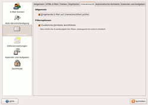

Spamfilter
Dieser Artikel wurde für die folgenden Ubuntu-Versionen getestet:
Dieser Artikel ist mit keiner aktuell unterstützten Ubuntu-Version getestet! Bitte diesen Artikel testen und das getestet-Tag entsprechend anpassen.
Zum Verständnis dieses Artikels sind folgende Seiten hilfreich:
 Dieser Unterartikel zu Evolution behandelt das automatische Filtern von unerwünschter Werbung per E-Mail. Zwei Programme stehen zur Verfügung:
Dieser Unterartikel zu Evolution behandelt das automatische Filtern von unerwünschter Werbung per E-Mail. Zwei Programme stehen zur Verfügung:
Bogofilter¶
Installation¶
Bei Bogofilter handelt es sich um eine Software, die für Mailserver entwickelt wurde, um E-Mails nach bestimmten Suchmustern zu analysieren. Dazu zählen beispielsweise Wörter, die oft in Spam-Mails vorkommen. Für die Benutzung muss folgendes Paket installiert werden:
bogofilter
 mit apturl
mit apturl
Paketliste zum Kopieren:
sudo apt-get install bogofilter
sudo aptitude install bogofilter
Konfiguration¶
Nach der Installation des Pakets muss noch in Evolution im Menü "Bearbeiten -> Plugins" das Plugin für SpamAssassin deaktiviert und das Bogofilter-Plugin aktiviert werden, da Evolution immer nur mit einem aktivierten Spam-Plugin arbeiten kann. Außerdem kann es sein, dass der Bogofilter noch unter "Bearbeiten -> Einstellungen -> E-Mail-Einstellungen -> Unerwünscht" unter "Vorgabe-Unerwünscht-Plugin" ausgewählt werden muss.
Man kann direkt unter Evolution die E-Mails durch das Spam bzw. Ham-Icon klassifizieren. Die händische Initialisierung von Bogofilter, welche noch unter älteren Versionen notwendig war, fällt komplett weg.
SpamAssassin¶
Installation¶
Dieses Programm funktioniert ähnlich wie bogofilter, ist aber wesentlich schwerer zu konfigurieren.
spamassassin (universe)
spamc (universe)
mit apturl
Paketliste zum Kopieren:
sudo apt-get install spamassassin spamc
sudo aptitude install spamassassin spamc
Einrichtung und Konfiguration¶
Im Homeverzeichnis des jeweiligen Benutzers befindet sich nach Installation ein versteckter Ordner .spamassassin, in dem sich eine Datei mit Namen user_prefs befindet. Man öffnet die Datei in einem Texteditor [5].
Hinweis:
Anmerkung! Sollte sich dort noch keine Datei befinden, gibt es im Ordner /usr/share/spamassassin/user_prefs.template eine entsprechende Vorlage, die man sich kopiert.
mkdir -p ~/.spamassassin/ cp /usr/share/spamassassin/user_prefs.template ~/.spamassassin/user_prefs

In dem Template sind alle Zeilen auskommentiert. Wichtig für die Konfiguration sind:
required_score 5: Der required_score gibt die Anzahl der “Punkte” an, die SpamAssassin vergeben muss, bevor eine Mail als Spam klassifiziert wird. Je niedriger die Zahl, desto aggressiver verhält sich Spamassassin.whitelist_from *@beispiel.de *.beispiel.de [mailto:email@beispiel.de email@beispiel.de]blacklist_from *@beispiel.de *.beispiel.de [mailto:email@beispiel.de email@beispiel.de]: Hier gibt man an, welche E-Mails NICHT als SPAM (Whitelist) und welche IMMER als SPAM klassifiziert werden sollen (Blacklist). Die einzelnen Adressen werden mit einem Leerzeichen getrennt. Es kann mit dem * als Platzhalter gearbeitet werden.
Nachdem man die user_prefs gespeichert hat, muss man Evolution neu starten, damit die Einstellungen angewendet werden.
Zusammenarbeit mit Evolution¶
In Evolution bindet man SpamAssassin über den Filterdialog ein.
Man öffnet ihn mit "Bearbeiten -> Nachrichtenfilter", wählt unter "Anzeigen der Filter für E-Mail:" "Eingang" aus und klickt auf "Hinzufügen".
Man gibt einen Regelnamen ein und wählt im ersten Auswahlfeld unter "Objekte suchen, die folgenden Kriterien entsprechen" Regex-Treffer aus. In die Mitte gehört der "Nachrichtenkopf" und in das Eingabefeld am Ende kommt ein Punkt (.). Dadurch fallen alle E-Mails unter diese Regel.
Unterhalb von Dann bestimmt man, was mit den Nachrichten geschieht. Hier wählt man "An Programm weiterleiten". In das Feld für den Programmnamen kommt /usr/bin/spamc, bzw. klickt man sich mit dem "Datei wählen"-Dialog ab "Dateisystem" dorthin durch.
Bei Nachrichten, die SpamAssassin für Spam hält, schreibt der Werbeblocker X-Spam-Flag: YES in den Kopfteil der jeweiligen E-Mail. Mit einer zweiten Regel erkennt Evolution solche E-Mails und leitet diese in einen SPAM-Ordner um, den man vorher anlegt. Man klickt im Filterdialog wieder auf "Hinzufügen". Nach Eingabe eines Regelnamens wählt man "Objekte suchen, die folgenden Kriterien entsprechen" den Eintrag "Bestimmte Kopfzeile" im Auswahlmenü. Als Name kommt dahinter "X-Spam-Flag". Das Kriterium ist "enthält", und in das Feld am Ende trägt man "YES" ein. Nun legt man noch eine Aktion für den Fall fest, dass die Bedingung zutrifft, z.B. "In Ordner verschieben". Als Ziel sollte man einen Ordner wählen, den man für SPAM angelegt hat. Mit "OK" schließt man den Filterdialog.
Die neuen Regeln gelten sofort. Schon beim nächsten Abfragen der E-Mails, sortiert SpamAssassin SPAM-E-Mails aus. Einen Blick in den SPAM-Ordner sollte man trotzdem von Zeit zu Zeit werfen, damit einem auch keine erwünschten Nachrichten entgehen, die SpamAssassin falsch klassifiziert hat.
Die Einstellung einer SpamAssassin-Filterregel ist nicht unbedingt nötig. Es reicht, wenn man in den E-Mail-Einstellungen die Filterung unerwünschter Mails aktiviert. Wenn man eine nicht gefilterte Mail manuell als unerwünscht markiert, wird SpamAssassin auch gleich trainiert. Dies ist der vorgesehene Weg, um komfortabel mit Spam umzugehen.
- Erstellt mit Inyoka
-
 2004 – 2017 ubuntuusers.de • Einige Rechte vorbehalten
2004 – 2017 ubuntuusers.de • Einige Rechte vorbehalten
Lizenz • Kontakt • Datenschutz • Impressum • Serverstatus -
Serverhousing gespendet von